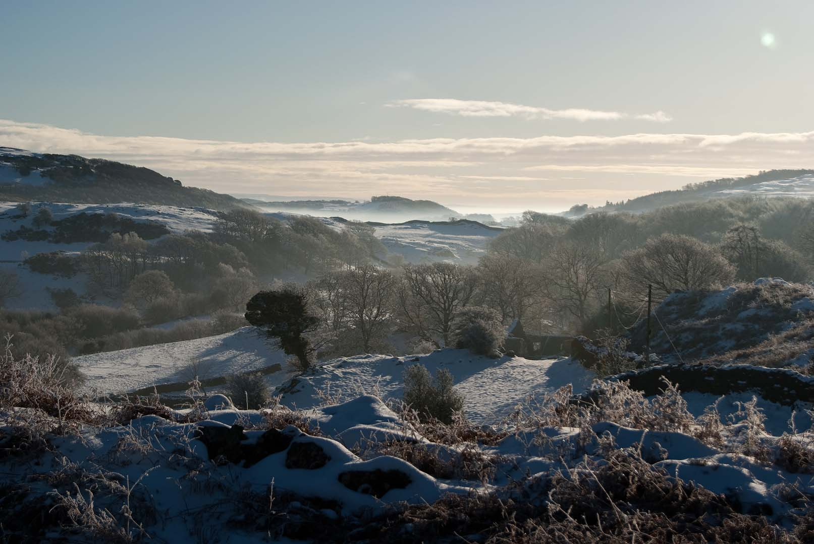

Tips for visiting the Lake District
By caring for our National Park, we can continue to make it a special place for all to visit. Follow these tips for a smooth, enjoyable and responsible visit.
- Plan sustainable travel options, including shuttle buses, boats, bikes and trains.
- Campervans and motorhomes should stay in designated sites overnight.
- If you need to travel by car, plan ahead and use official car parks.
- Leave no trace. Please take your litter and dog waste home.
- Do not block gates or road access.
- Dogs must be kept on leads anywhere there may be livestock.
- Fly camping by lakeshores and in lay-bys is not allowed.
- Wild camping is only allowed with the permission of the landowner. Follow local wild camping guidance or stay at a campsite.
- Fires and barbecues are not permitted in the Lake District National Park unless they are on private land with permission.
Where to visit
From towering mountains to tranquil lakes, each area of the Lake District offers something unique. Wander beside woodland-fringed Coniston Water, take in Derwentwater near Keswick, or explore the villages of Grasmere and Rydal.

Adventure awaits in the Langdale Valley, the remote Northern Lakes, Ullswater, Glenridding and Helvellyn. You can also discover Wastwater, England’s deepest lake, or visit Windermere, Bowness and Ambleside, home to England’s largest natural lake.
Sustainable travel
Let’s keep the Lake District special by choosing alternative ways to get here and explore its surroundings.
Whether by boat, bus, bike or on foot, travelling sustainably allows you to experience the Lake District in a more immersive and environmentally friendly way. Leaving the car at home can help reduce traffic and parking pressures while making the journey part of the adventure.
The Lake District is in the North West of England, with Manchester to the south and Carlisle to the north. You can sit back and watch the landscape pass from a train, explore the lakes by boat, or travel between valleys by bus, bike and foot.
Windermere
Windermere Lake Cruises connects Lakeside, Ferry House, Bowness, Jetty, Bark Barn Pier, Wray Castle, Brockhole and Ambleside.
Derwentwater
Keswick Launch connects Keswick, Ashness Gate, Lodore, High Brandelhow, Low Brandelhow, Hawes End, Lingholm and Nichol End.
Cycling
Electric and mountain bikes can be hired throughout the Lake District. Suggested routes include Hawkshead to Coniston Boating Centre, the western shore of Windermere and the Langdale Valley, with both quiet road and off-road options available.
Walking
Whether you are visiting for the first time or looking for an accessible way to explore, there is a walk for everyone. Try one of the Miles Without Stiles routes or join a guided walk to discover new paths with local volunteers.
Accessible routes
Miles Without Stiles are accessible walking routes designed for a wide range of visitors. They follow lake shores and riversides, pass through woodland and historic sites, and offer opportunities to enjoy the landscape without tackling difficult terrain.
Driving to and around the Lake District
If travelling by car is necessary, plan ahead and make use of designated car parks. Other options include combined parking and bus tickets, electric car hire, pay-as-you-drive vehicles and lift sharing.
Getting here
The M6 runs along the eastern side of the Lake District National Park.
- Take Junction 36 and the A590 for the southern Lake District.
- Take Junction 40 and the A66 or A592 for the northern Lake District.
Average journey times
- London and the South East to the Lake District: around 5 hours.
- Manchester to the Lake District: around 1.5 hours.
- York to the Lake District: around 2 hours.
- Kendal to Keswick: around 1 hour.
- Windermere to Keswick: around 40 minutes.
- Kendal to Wasdale: around 1.5 hours.
Sat nav can be useful, but take care when following routes through narrow country roads. Check your route before travelling and use official car parks where possible.
Ten Highest Mountains
| Rank | Mountain | Height |
|---|---|---|
| 1 | Scafell Pike | 978 metres |
| 2 | Scafell | 964 metres |
| 3 | Helvellyn | 950 metres |
| 4 | Skiddaw | 931 metres |
| 5 | Great End | 910 metres |
| 6 | Bowfell | 902 metres |
| 7 | Great Gable | 899 metres |
| 8 | Pillar | 892 metres |
| 9 | Nethermost Pike | 891 metres |
| 10 | Catstycam | 890 metres |